Ejercicios de matrices II
1Sean las matrices:
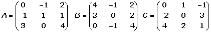
Efectuar las siguientes operaciones:
(A + B)2; (A − B)2; (B)3; A · Bt · C.
2Sean las matrices:
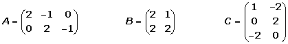
Justificar si son posibles los siguientes productos:
1(At · B ) · C
2(B · Ct ) · At
3Determinar la dimensión de M para que pueda efectuarse el producto A · M · C
3Determina la dimensión de M para que Ct · M sea una matriz cuadrada.
3Hallar todas las matrices que conmuten con la matriz:
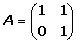
4Siendo:
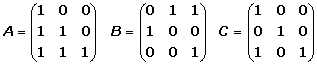
Resolver la ecuación matricial:
A X + 2 B = 3 C
5Una empresa de muebles fabrica tres modelos de estanterías: A, B y C. En cada uno de los tamaños, grande y pequeño. Produce diariamente 1000 estanterías grandes y 8000 pequeñas de tipo A, 8000 grandes y 6000 pequeñas de tipo B, y 4000 grandes y 6000 pequeñas de tipo C. Cada estantería grande lleva 16 tornillos y 6 soportes, y cada estantería pequeña lleva 12 tornillos y 4 soportes, en cualquiera de los tres modelos.
1Representar esta información en dos matrices.
2Hallar una matriz que represente la cantidad de tornillos y de soportes necesarios para la producción diaria de cada uno de los seis modelos−tamaño de estantería.
- 1
- 2
- 3
- 4
- 5
Ejercicio 1 resuelto
Sean las matrices:
Efectuar las siguientes operaciones:
(A + B)2; (A − B)2; (B)3; A · Bt · C.
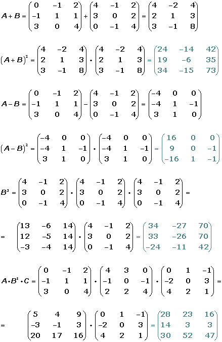
Ejercicio 2 resuelto
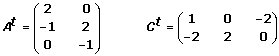
Justificar si son posibles los siguientes productos:
1(At · B ) · C
(At3 x 2 · B2 x 2 ) · C3 x 2 = (At · B )3 x 2 · C3 x 2
No se puede efectuar el producto porque el número de columnas de
(At · B ) no coincide con el nº de filas de C.
2(B · Ct ) · At
(B2 x 2 · Ct2 x 3 ) · At 3 x 2 = (B · C)2 x 3 · At3 x 2 =
=(B · Ct · At )2 x 2
3 Determinar la dimensión de M para que pueda efectuarse el producto A · M · C
A3 x 2 · Mm x n · C 3 x 2 m = 2
4 Determina la dimensión de M para que Ct · M sea una matriz cuadrada.
Ct2 x 3 · Mm x n m = 3 n = 3
Ejercicio 3 resuelto
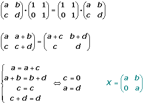
Ejercicio 4 resuelto
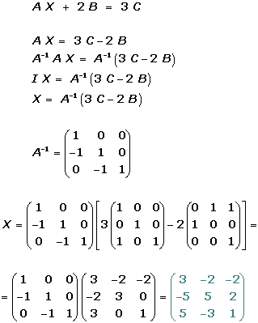
Ejercicio 5 resuelto
Una empresa de muebles fabrica tres modelos de estanterías: A, B y C. En cada uno de los tamaños, grande y pequeño. Produce diariamente 1000 estanterías grandes y 8000 pequeñas de tipo A, 8000 grandes y 6000 pequeñas de tipo B, y 4000 grandes y 6000 pequeñas de tipo C. Cada estantería grande lleva 16 tornillos y 6 soportes, y cada estantería pequeña lleva 12 tornillos y 4 soportes, en cualquiera de los tres modelos.
1 Representar esta información en dos matrices.
Filas: Modelos A, B, C Columnas: Tipos G, P
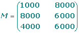
Matriz de los elementos de las estanterías:
Filas: Tipos G, P Columnas: T, S
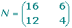
2 Hallar una matriz que represente la cantidad de tornillos y de soportes necesarios para la producción diaria de cada uno de los seis modelos−tamaño de estantería.
Matriz que expresa el número de tornillos y soportes para cada modelo de estantería:
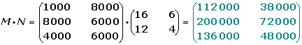
 Ejercicios
Ejercicios